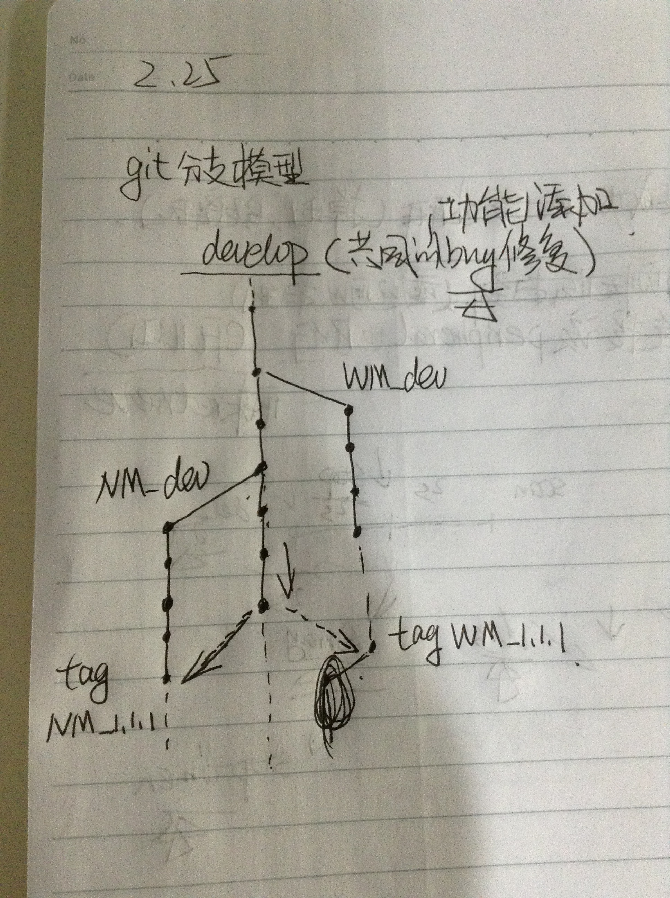

考虑到下一阶段的iphone调参的开发情况，现在将起开发模型说明如下，欢迎大家的意见。
我们坚信，一份代码，如果在维护上的成本远远大于其开发上的成本，那么这份代码的质量和管理将是很糟糕的。
iphone调参的git开发模型，主要参考了../wiki_ny/一个成功的git分支模型，结合我们项目实际情况，规划如下：

对上图的几点说明：
- develop分支用户功能开发，bug修复，wm_dev分支/nm_dev分支等为机型分支，分别对应wookong－M机型的调参app开发和naza－M机型的调参app开发，如果有新的机型加入，则从上面的develop分支或者机型分支checkout新的机型分支
- 共同的bug修复再develop分支上进行，和机型有关的bug在对应的机型分支上进行（这一点最难执行）
- develop分支可以合并到任何机型分支，反之不行，机型分支之间也不许相互合并
- 各机型的发布版本tag相互独立，并且添加机型名字缩写，例如tag wm_1.2.12，tag nm_1.1.1等
- 其他分支使用（hotfix／release等）参考../wiki_ny/一个成功的git分支模型。